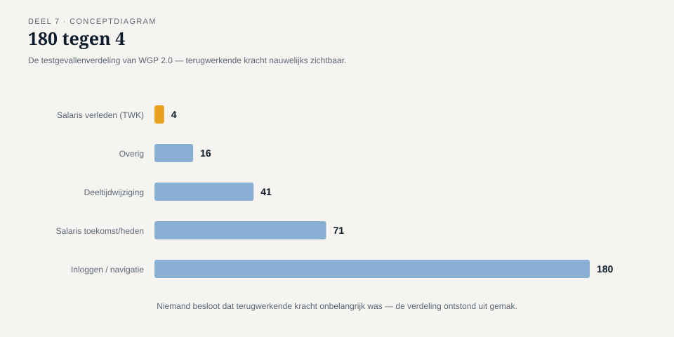
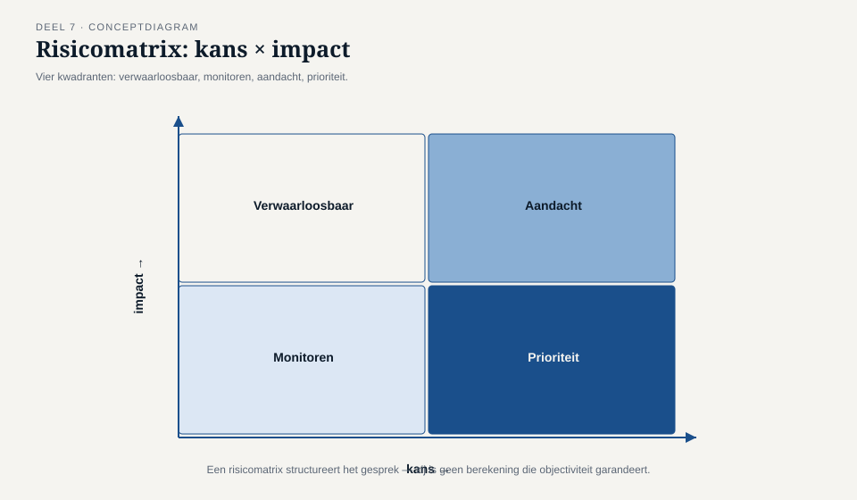
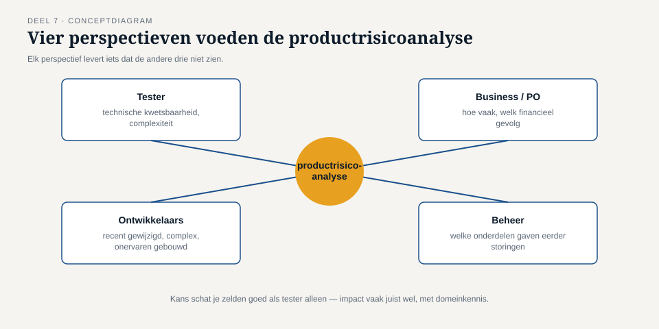

Deel 7 — Risicogebaseerd testen
Slidedeck · Ductus-cursus Testen en Kwaliteitsborging · niveau 1 · deel 7 van 30 · 23 slides
Slidetypen: titleSlide, sectionSlide, bulletsSlide, statementSlide, quoteSlide, tableSlide, figureSlide, opdrachtSlide.
Slide 1 — titleSlide
Risicogebaseerd testen Deel 7 · Niveau 1 Fundament Cursus Testen en Kwaliteitsborging
Slide 2 — figureSlide

(stilte laten hangen na tonen)
Slide 3 — statementSlide
Niemand besloot ooit dat terugwerkende kracht onbelangrijk was.
De verdeling ontstond vanzelf — bij afwezigheid van een expliciete keuze.
Dit is bevinding T2.
Slide 4 — opdrachtSlide
Opdracht 7.1 — Productrisico of projectrisico?
Vijf situaties: PR of PJ?
10 minuten, individueel.
Slide 5 — sectionSlide
1. Kans × impact
Slide 6 — figureSlide

Slide 7 — bulletsSlide
Twee waarschuwingen
- Een risicomatrix oogt preciezer dan de schattingen rechtvaardigen
- Kans is voor een tester zelden goed te schatten — impact meestal wel
Kans komt van de business. Impact vaak van de tester.
Slide 8 — figureSlide

Slide 9 — sectionSlide
2. Productrisicoanalyse
Slide 10 — bulletsSlide
Vier stappen
- Identificeer risico-items
- Beoordeel kans en impact
- Prioriteer
- Vertaal naar teststrategie
Slide 11 — opdrachtSlide
Opdracht 7.2 — Bouw de risicomatrix
Vijf risico-items, zoals vóór de bouw — zonder kennis van de afloop.
Was dit vooraf te doen geweest?
25 minuten, groepjes van drie.
Slide 12 — figureSlide

Slide 13 — statementSlide
Wat het hoogste risico droeg,
kreeg de minste aandacht.
Slide 14 — sectionSlide
3. Exitcriteria die een besluit ondersteunen
Slide 15 — quoteSlide
"Minimaal 95% geslaagd en geen open bevinding met prioriteit hoog."
Haalbaar zonder ooit het juiste te hebben getest.
Slide 16 — tableSlide
Risicogebaseerd exitcriterium
| Niveau | Criterium |
|---|---|
| Hoog | Volledig getest, geen enkele openstaande bevinding |
| Gemiddeld | Kernscenario's + grenswaarden, geen hoog/kritiek |
| Laag | Steekproef of bewust overgeslagen, expliciet vermeld |
Slide 17 — opdrachtSlide
Opdracht 7.3 — Herformuleer het exitcriterium
Van één percentage naar drie risiconiveaus, specifiek voor WGP 2.0.
20 minuten, tweetallen.
Slide 18 — opdrachtSlide
Opdracht 7.4 — Techniek volgt risico
Terug naar de vijf risico-items: welke techniek uit deel 5 en 6, met welke diepgang?
25 minuten, groepjes van drie.
Slide 19 — statementSlide
Risicogebaseerd testen betekent niet: laag-risicogebieden nooit testen.
Het betekent: de keuze om ze licht te testen is een besluit, geen toeval.
Slide 20 — bulletsSlide
TMAP-lens
- Risico is daar geen aparte stap maar het fundament van de aanpak
- Gekoppeld aan VOICE: welke bedrijfswaarde staat op het spel?
"Mutaties komen tijdig en correct aan" — inloggen raakt dat nauwelijks.
Deel 12 (niveau 2) werkt dit volledig uit.
Slide 21 — bulletsSlide
Examenaansluiting — CTFL hoofdstuk 5
- Productrisico vs. projectrisico
- Kans, impact, risiconiveau → testinspanning
Let op: kans × impact — beide nodig, nooit één apart beoordelen.
Slide 22 — bulletsSlide
Huiswerk
- Opdracht 7.5 — productrisicoanalyse eigen organisatie (startpunt deel 8)
- Oefentoets, tien vragen
Slide 23 — statementSlide
Volgende keer: uitvoeren en bevindingen
Sluit tegelijk T5 en T7 — de testomgeving en de ketenpartner die nooit meededen.